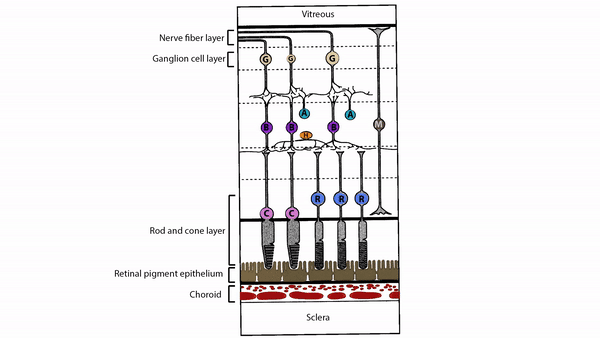
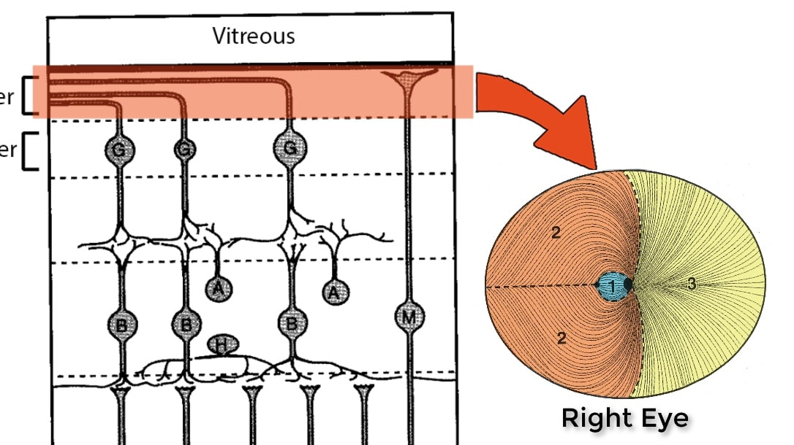
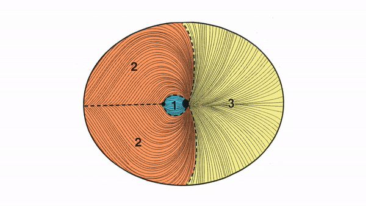

Retina converts optical information into neural signals (“visual transduction”) that travel to the optic nerve
Retina Cross Section Revised
Retinal cones, concentrated mostly in fovea, mediate high resolution and color vision
Retinal rods, concentrated outside the fovea, gather dim light across broad receptive fields and provide low resolution vision in dim light

Bipolar, horizontal, and amacrine cells receive signals from rods and cones, refine and convey them to retinal ganglion cells

Retinal ganglion cells receive signals from bipolar, horizontal, and amacrine cell axons, send their axons through retinal nerve fiber layer to optic nerve

Retinal nerve fiber layer has three main axon bundles
Maculopapillar bundle carries retinal ganglion cell axons from fovea and retinal region between fovea and optic disc; mediates high resolution and color signals
Arcuate bundles carry retinal ganglion cell axons from above and below maculopapillar bundle; mediate lower resolution and mostly achromatic signals
Nasal radial bundle carries retinal ganglion cell axons from nasal retina; mediates lower resolution and mostly achromatic signals